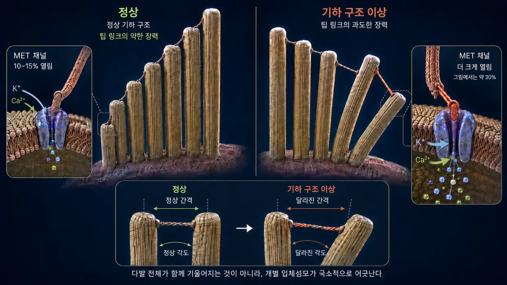
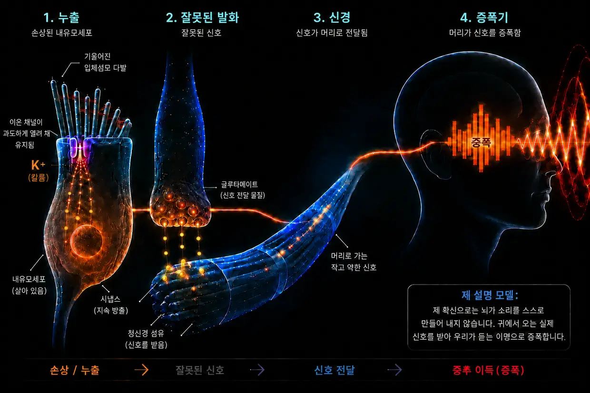

소음으로 인한 이명 — 귀가 한계에 다다를 때
마지막 업데이트: 2026년 8월
이 글은 수년에 걸친 조사와 제가 두 차례 이명을 이겨 낸 경험을 바탕으로 한 제 나름의 설명이며, 표준적인 의학 설명은 아닙니다.
저 역시 당시 이 극심한 질환을 직접 겪었습니다. 제 이야기에서 이미 들려드렸던 그대로입니다.
너무 절망한 나머지 스스로 맹세했습니다. “이명이 사라지든지, 아니면 내가 사라지든지 둘 중 하나다.” (물론 그 말을 그렇게까지 진지하게 한 것은 아니지만, 실제로 엄청난 압박에 짓눌려 있었습니다.)
당시 제가 주로 겪은 것은 왼쪽 귀에서 들리는 크고 날카로운 고주파음이었고, 아주 먼 배경에는 잡음도 깔려 있었습니다. 그때의 제가 상상할 수 있는 최악의 일이었습니다. 엎친 데 덮친 격으로 3일째에는 오른쪽 귀에도 이미 희미한 삐 소리가 나타났습니다. 얼마 지나지 않아 이미 있던 이 오른쪽 소리는 훨씬 더 커졌습니다. 제게는 완전히 잘못된 것으로 드러난 의사들의 지시가 직접적인 원인이었습니다.
그 “지시”의 핵심은 다른 소리로 이명을 덮으라는 것이었습니다. 예를 들면 헤드폰으로 음악을 더 크게 듣거나 잡음을 끊임없이 틀어 놓는 방식이었습니다. 하지만 실제로는 이미 심하게 과부하된 귀를 훨씬 더 많은 소리 자극에 노출하는 일이었습니다. 돌이켜 보면 그것은 가장 큰 실수 중 하나였습니다. 바로 그 때문에 상태가 악화됐고, 오른쪽 귀에 이미 있던 희미한 소리도 훨씬 더 커졌기 때문입니다.
그 소리는 제 신경과 수면, 삶 전체를 향한 끊임없는 공격 같았습니다. 의사들은 그 상태로 사는 법을 배워야 한다고 했습니다. 인터넷에서 찾은 치료법들은 서로 모순됐습니다. 제게는 전부 갈피를 못 잡는 이야기처럼 들렸습니다.
그래서 스스로 맹세했습니다. 이게 전부일 리는 없다. 저는 무언가에 홀린 사람처럼 조사하고, 연구를 읽고, 경험담을 비교하며 제 나름의 전체 그림을 그리기 시작했습니다. 조금씩 분명한 메커니즘이 모습을 드러냈습니다. 제게 논리적으로 보였고, 나중에는 제 경험에서도 확인된 그림이었습니다.
이제는 이렇게 말할 수 있습니다. 소음으로 인한 이명은 수수께끼가 아닙니다. 귀가 과부하된 결과입니다. 그 안에서 무슨 일이 벌어지는지 이해하면 왜 그 소리가 존재하는지, 스스로 무엇을 할 수 있는지도 이해하게 됩니다.
요약 60초 만에 읽는 핵심
극단적인 음량(예: 클럽)에서는 펌프가 도저히 따라가지 못합니다. 에너지 소비(ATP)가 폭발적으로 늘고, 세포는 필요한 만큼 에너지를 공급하지 못해 불완전한 비상 모드로 전환됩니다. 이 과정에서 젖산이 생기고 세포 환경이 산성화되며, 단거리 달리기에서 근육이 힘을 잃는 것과 비슷한 악순환이 시작됩니다. 펌프가 따라가지 못하면 아주 작은 감각모 안에 칼슘이 쌓입니다. 이 과도한 칼슘은 분해 효소인 칼페인(calpain)을 활성화하고, 칼페인은 감각모 내부의 구조 섬유를 이어 주는 “접착제”인 교차결합 단백질(Crosslinker)을 먹어 치웁니다. 이 접착제가 사라지면 감각모는 강성을 잃고 변형됩니다. 그러면 꼭대기의 이온 채널은 비스듬히 열린 창문처럼 계속 지나치게 벌어진 채로 남습니다. 이 지속적인 누출을 통해 칼륨이 끊임없이 흘러들어와 세포 전체를 전기적으로 계속 긴장된 상태에 둡니다. 이 전압은 내유모세포 자체에 있는 다른 채널들을 열고, 그 채널을 통해 칼슘이 시냅스로 조금씩 떨어져 그곳에서 청신경을 향한 글루타메이트 방출이 끊임없이 이어집니다. 뇌는 작지만 일정한 이 잘못된 신호를 받아들입니다. 그리고 이 주파수 대역에서 정상적인 입력이 빠져 있다는 것을 알아차리고 내부 전치 증폭기인 중추성 이득(Central Gain)을 극단적으로 높입니다. 이 증폭이 더해지고 나서야 미세한 잘못된 신호가 의식적으로 들리는 소리, 즉 이명이 됩니다.
좋은 소식: 세포가 살아 있는 한, 복구를 위한 설계도와 능력을 지니고 있습니다. 세포에는 에너지와 재료, 휴식이 필요합니다.
귀 안에서 실제로 일어나는 일: 정상적인 생리적 청각 과정
깊이 들어가기 전에, 이 글 전체를 같은 뜻으로 이해할 수 있도록 용어부터 짧게 정리하겠습니다. 내이에는 이른바 유모세포가 있습니다. 소리를 듣는 실제 감각세포입니다. 각 유모세포의 표면에는 손가락처럼 생긴 아주 작은 돌기들이 다발을 이루고 서 있습니다. 이것이 스테레오실리아(입체섬모)입니다. 유모세포 하나에는 달팽이관 안의 위치에 따라 대략 50개에서 300개가 있으며, 오르간 파이프처럼 짧은 것부터 긴 것까지 줄지어 배열돼 있습니다. 이 입체섬모 하나하나에는 액틴 단백질로 이루어진 고유한 내부 지지 골격이 있습니다. 일상에서나 연구에서나 이 입체섬모는 흔히 단순히 “털” 또는 “감각모”라고 불립니다. 이 페이지에서도 같은 뜻으로 ‘감각모’라는 말을 쓰겠습니다. 중요한 것은 이것입니다. 제가 ‘감각모’라고 말할 때는 언제나 유모세포 위의 입체섬모를 뜻하며, 유모세포 자체를 말하는 것이 아닙니다.
신호 사슬에서 중요한 점: 시냅스에서 글루타메이트가 방출되고 청신경으로 신호가 전달되는 과정을 설명할 때는 명확히 내유모세포를 뜻합니다.
정상적인 청각 과정은 고도로 정밀한 연쇄 반응으로 진행됩니다.
자극: 소리 자극이 유모세포의 미세한 감각모(입체섬모)에 닿아 옆으로 휘게 합니다.
기계적 당김 — 팁 링크(Tip-Links): 이 감각모의 끝부분은 극도로 가느다란 단백질 실인 팁 링크로 서로 연결돼 있기 때문에, 감각모가 휘면 장력이 생깁니다. 이 실은 기계식 당김 장치처럼 작동해 꼭대기에 있는 이온 채널을 물리적으로 잡아당겨 엽니다. 욕조 마개에 달린 줄을 당기는 것과 비슷합니다.
유입: 내이는 칼륨이 풍부한 액체로 채워져 있습니다. 그래서 채널이 열리면 칼륨(K⁺)이 감각모 안으로 곧바로 흘러들고, 소량의 칼슘도 함께 들어옵니다.
활성화: 이 칼륨 유입은 내유모세포의 전압을 바꿉니다(탈분극). 그러면 더 아래쪽, 감각모가 아니라 그 밑의 세포체에 있는 칼슘 채널들이 2차적으로 열립니다.
신호: 이렇게 내유모세포 안으로 들어온 칼슘이 비로소 신경전달물질의 방출을 일으키고, 신호는 청신경을 통해 뇌로 발사됩니다.
초기화: 그 뒤 감각모와 유모세포의 세포체에 있는 특수 운반체들이 ATP(세포 에너지)를 이용해 과도한 칼륨과 칼슘을 다시 밖으로 퍼냅니다. 그러면 세포가 진정될 수 있습니다.
이 시스템은 작은 “유입과 배출”이 호흡의 리듬처럼 계속 일어나도록 만들어져 있습니다. 여기서 결정적인 점이 있습니다. 감각모 꼭대기의 채널은 휴식 상태에서도 완전히 닫혀 있지 않고 항상 아주 조금 열려 있습니다. 이는 정상이며 의도된 상태입니다. 그래야 세포가 아무리 작은 소리에도 언제든 즉시 반응할 수 있습니다. 감각모가 곧게 서 있는 동안에는 이 열림이 아주 작고 통제된 상태로 유지됩니다. 하지만 감각모가 계속 한쪽으로 기울어 있으면 채널이 지나치게 크게 열리고, 바로 그것이 문제가 됩니다.
이제 이 시스템이 과부하될 때 무슨 일이 벌어지는지 보기 전에 꼭 짚고 넘어갈 점이 하나 있습니다. 소음 손상 뒤 만성 이명이 생기면 많은 당사자들은 귀의 유모세포가 돌이킬 수 없이 파괴됐고 이제 뇌가 기억 속의 소리를 독자적으로 만들어 낸다고 생각합니다. 많은 의사들도 그런 인상을 줍니다. 제 확신으로는 이 설명만으로는 부족합니다. 바로 그 소리가 존재하기 때문에, 여전히 흥분할 수 있는 말초 조직 어딘가에서 활성 상태의 잘못된 신호가 생겨야 한다고 저는 확신합니다. 제 주된 연쇄 과정에서는 아직 살아 있지만 조절에 이상이 생긴 내유모세포가 이 신호를 보냅니다. 다른 말초성 상황에서는 미엘린 문제나 염증 때문에 잘못 발화하는 살아 있는 청신경이 신호의 근원일 수도 있습니다. 반면 완전히 죽은 조직은 더 이상 신호를 보내지 않습니다.
이제부터는 이런 기능 상실이 일어나는 과정을 단계별로 자세히 설명합니다. 더 짧게 보고 싶다면 이 페이지 위쪽에 요약이 있습니다.
소음이 지나치게 강해질 때 (클럽에 가면 무슨 일이 벌어지는가)
하지만 너무 많은 소리가 한꺼번에 또는 지속적으로(만성적으로) 들어오면 균형이 무너지고 기계적 구조가 제 기능을 잃습니다. 클럽에 갈 때마다 이런 일이 생기는 것은 아닙니다. 하지만 소음으로 인한 이명이 생겼다면, 그 뒤에는 바로 이 메커니즘이 있다고 저는 확신합니다. 에너지 손실, 기계적 붕괴, 화학적 범람이 이어지는 연쇄 과정입니다. 이 세 과정은 서로를 부추기며 악순환으로 치닫습니다.
- 01에너지 붕괴
- 02기계적 붕괴
- 03긴급 구조와 쳇바퀴
1단계: 에너지 붕괴
정상적인 청각 과정을 떠올려 봅시다. 소리 자극이 들어올 때마다 이온이 세포 안으로 흘러들고, 그 뒤에는 ATP를 써서 다시 밖으로 퍼내야 합니다. 보통 음량에서는 편안한 리듬입니다. 세포는 여유롭게 펌프질하고 에너지도 넘칩니다. 하지만 100데시벨의 클럽에서는 음파가 멈추지 않고 무지막지한 힘으로 감각모를 몰아칩니다. 채널은 확 열리고 이온이 대량으로 밀려들며, 펌프는 도저히 따라가지 못합니다. 에너지 소비가 폭발합니다.
이제 유모세포는 공급할 수 있는 것보다 훨씬 더 많은 에너지를 태웁니다. 세포의 정상적인 발전소인 미토콘드리아는 한계까지 가동됩니다. 막대한 에너지 수요를 어떻게든 감당하려고 세포는 더 빠르지만 불완전한 비상 경로, 즉 혐기성 해당과정에 손을 댑니다. 이 비상 모드는 즉시 에너지를 만들지만, 부산물로 젖산(락테이트)을 생성해 세포 환경을 산성화합니다. 에너지 생산을 담당하는 효소들은 산 때문에 갈수록 비효율적으로 변합니다. 악순환입니다.
운동에 빗대면 이렇습니다. 웨이트 트레이닝이나 단거리 달리기를 해 본 사람이라면 누구나 압니다. 어느 정도 시간이 지나면 근육이 “타는” 듯해지고(락테이트 상승), 어느 순간 더는 움직이지 않습니다. 전형적인 근육 기능 상실입니다. 이와 똑같은 화학적 기능 상실이 내이에서도 벌어집니다. 다만 통증이 아니라 기능 정지로 느껴집니다.
그리고 바로 여기에 진짜 위험이 숨어 있습니다. 펌프가 따라가지 못하면 감각모 안에 칼슘이 쌓입니다. 적은 양의 칼슘은 정상이며 필요합니다. 하지만 과도한 양은 파괴자가 됩니다. 무엇을 파괴하고 왜 그렇게 치명적인지는 2단계에서 보겠습니다.
2단계: 기계적 붕괴
이제 칼슘이 무슨 일을 벌이는지 이해하려면 감각모의 내부 구조를 잠깐 알아야 합니다. 감각모는 수백 개의 액틴 필라멘트가 나란히 늘어선 구조입니다. 마른 스파게티 면 한 다발을 떠올리면 됩니다. 이 필라멘트들은 교차결합 단백질(Crosslinker)이라는 짧은 단백질 다리로 서로 붙어 있습니다. 이 교차결합 단백질이야말로 감각모를 지탱하는 진짜 구조 기술자입니다. 필라멘트 다발을 단단히 묶어 강철 파이프처럼 빳빳하게 세우며, 그렇게 서 있는 데 에너지도 들지 않습니다. 교차결합 단백질이 온전한 한 감각모는 곧게 서 있습니다.
1단계에서 에너지가 손실되면서 이제 치명적인 연쇄 반응이 시작됩니다.
펌프가 이온 유입을 감당하지 못합니다(칼슘 범람): 정상적인 청각 과정에서 보았듯, 칼륨과 함께 언제나 소량의 칼슘도 감각모 안으로 들어옵니다. 정상 작동 때는 문제가 되지 않습니다. 감각모 막에는 칼슘 전용 펌프가 있어 이 칼슘을 즉시 밖으로 내보냅니다. 하지만 이 펌프도 ATP가 필요합니다. 클럽에서 급성 과부하가 일어나면 에너지가 턱없이 부족하고, 펌프는 말 그대로 쏟아지는 이온에 압도됩니다. 그 결과 평소에는 문제가 되지 않을 만큼 적은 칼슘조차 감각모 안에 쌓입니다. 바로 이 과도한 농도가 실제 구조 붕괴를 일으킵니다.
이제 실제 구조 붕괴가 시작됩니다. 쌓인 칼슘이 특수한 분해 효소인 칼페인을 활성화합니다. 이 효소들은 방금 살펴본 교차결합 단백질, 즉 다발을 한데 붙드는 모르타르를 바로 먹어 치웁니다.
왜 이것이 그렇게 파괴적인지 이해하려면 간단한 그림이 도움이 됩니다.
마른 스파게티 면 한 가닥을 손에 들어 보세요. 쉽게 휘고 부러뜨릴 수 있습니다. 이제 스파게티 면 100가닥을 순간접착제로 붙여 단단한 막대 하나를 만든다고 생각해 보세요. 갑자기 거의 휘지 않는 빳빳한 파이프가 됩니다. 각각의 가닥은 약하지만 서로 붙어 있으면 강합니다.
감각모도 정확히 같은 원리로 작동합니다. 액틴 필라멘트만으로 빳빳해지는 것이 아니라, 교차결합 단백질로 필라멘트들이 한데 결합돼야 빳빳해집니다.
이제 칼페인이 이 접착제를 먹어 치우면 정반대의 일이 벌어집니다. 빳빳한 파이프가 다시 느슨한 낱가닥으로 풀립니다. 액틴 필라멘트는 여전히 입체섬모 안에 있고 사라지지 않았지만, 사이의 연결이 없어져 더는 서로를 붙들지 못합니다. 감각모는 무언가가 부러져서가 아니라 내부의 결속이 사라졌기 때문에 강성을 잃습니다.
계속 클럽 안에 머물러 있으면 흔히 상황은 더 나빠집니다. 이제 보호받지 못하고 따로 서 있는 필라멘트들은 계속되는 음압을 받다가 약한 지점에서 실제로 부러질 수 있습니다. 이웃 가닥의 지지 없이 압력을 받아 꺾이는 스파게티 면 한 가닥과 같습니다. 필라멘트 하나가 부러지면 하중은 옆의 필라멘트로 넘어가고, 그 필라멘트도 다시 부러질 수 있습니다. 연쇄 효과로 번질 위험이 있습니다.
결과: 내부 지지력을 잃은 감각모는 더 이상 곧게 선 자세를 유지하지 못하고 변형됩니다. 이것이 무엇을 뜻하는지 다음 그림으로 생각해 보면 쉽습니다. 길이가 서로 다른 감각모들은 줄지어 나란히 서 있고, 끝부분은 가느다란 실인 팁 링크로 연결돼 있습니다. 건강할 때는 모든 감각모가 양초처럼 반듯하게 섭니다. 사이의 실에는 정확히 알맞은 장력이 걸리고, 휴식 상태의 채널은 아주 조금만 열려 있습니다. 음파가 오면 감각모는 잠깐 옆으로 기울고 실이 팽팽해지면서 채널이 열립니다. 음파가 지나가면 감각모는 다시 돌아오고 모든 것이 이완됩니다. 깔끔한 유입과 배출입니다.
이제 같은 감각모들이 곧게 서 있지 않고, 음파가 오지도 않았는데 벌써 비뚤게 처져 있다고 생각해 보세요. 사이의 실에는 원래와 다른 장력이 계속 걸립니다. 동시에 막도 뒤틀려 있습니다. 그 때문에 채널은 휴식 상태에서도 이미 지나치게 크게 열려 있습니다. 이때부터 음악이 진작 끝났는데도 칼륨과 칼슘이 계속 통제되지 않은 채 세포 안으로 흘러듭니다. 지속적인 누출이 생겼고, 이명의 토대도 마련됐습니다. 기하학적 구조가 맞지 않기 때문에 내유모세포는 소리가 없는데도 신호를 발사합니다.

소음으로 인한 이명은 소음 사건 직후 눈에 띌 수도 있지만, 몇 시간이나 며칠이 지나고 나서야 의식적으로 느껴질 수도 있습니다. 제 경우에는 3일째에야 그 소리를 알아차렸고, 그 이유는 지금도 확실히 모릅니다. 가능한 설명들은 FAQ에서 가설임을 명확히 밝히며 설명하겠습니다.
3단계: 긴급 구조 — 그리고 그것만으로는 부족한 이유
세포는 손상을 감지하고 즉시 생존 메커니즘을 작동시킵니다. 세포체에 비상용으로 이미 비축돼 있던 XIRP2 같은 특수 복구 단백질이 손상 지점으로 질주합니다. 필라멘트가 부러져 있으면 이 단백질은 2단계에서 본 스파게티의 파손 부위를 분자 차원의 초강력 덕트테이프처럼 감쌉니다. 필라멘트가 완전히 끊어지고 연쇄 과정이 통제 불능에 빠지는 것을 막습니다. 이것이 복구 1단계: 급성 긴급 안정화입니다. XIRP2는 새로 만들어야 하는 것이 아니라 손상 지점으로 이동하기만 하면 되므로 이 과정은 빠르게 진행됩니다(몇 분에서 몇 시간). 감각모는 살아남습니다. 하지만 필라멘트 사이에서 사라진 교차결합 단백질을 XIRP2가 대신할 수는 없기 때문에 골격은 여전히 부드럽고 불안정합니다.
이제 반드시 복구 2단계(능동적 리모델링)가 시작돼야 합니다. 여기에는 두 가지 작업이 한꺼번에 필요합니다. 첫째, XIRP2로 덧댄 부분을 새롭고 온전한 액틴으로 교체해야 합니다. 둘째, 새로운 교차결합 단백질을 합성해 필라멘트 사이에 끼워 넣고 다발이 다시 단단한 막대가 되도록 결합해야 합니다. 두 작업 모두 막대한 ATP를 소모하고, 세포체에서 오는 재료가 필요합니다. 입체섬모에는 자체 발전소인 미토콘드리아가 없으므로 아래쪽 유모세포의 세포체가 보내는 에너지에 전적으로 의존합니다. 그런데 바로 이 지점에서 대부분의 성인은 만성화의 덫에 걸립니다. 그 이유는 다음 장에서 설명합니다.
-
01에너지 붕괴
ATP 소비가 폭발하고 세포는 비상 모드로 전환됩니다. 젖산이 쌓이고 세포 환경이 산성화됩니다.
-
02기계적 붕괴
과도한 칼슘이 입체섬모의 필라멘트를 이어 주는 “접착제”를 먹어 치웁니다. 감각모가 변형되고 누출이 생깁니다.
-
03긴급 구조와 쳇바퀴
XIRP2가 파손 부위를 안정시킵니다. 급성 단계에서 세포는 살아남지만, 실제 복구에 쓸 에너지는 부족합니다.
쳇바퀴의 함정: 복구가 계속 이뤄지지 않는 이유
이제 급성 사건이 만성 문제로 넘어가는 결정적인 지점에 도달했습니다.
소음이 멈추면 곧바로 회복이 시작됩니다. 세포는 즉시 ATP를 다시 만들기 시작하고, 펌프는 조금씩 정상 작동 상태로 돌아갑니다. 산성 물질의 분해, 복구 작업, 에너지 비축분의 재충전까지 포함한 재생의 전체 과정은 그 뒤 시간을 두고, 특히 수면 중에 이뤄집니다. 몸은 이제 뒷정리를 합니다. 클럽에서 받은 엄청난 부담과 이미 생긴 누출이 함께 만들어 낸 급성 이온 범람을 조금씩 밖으로 퍼냅니다. 극단적인 이온 수치는 대부분 정상화되고, 칼슘 농도 역시 임계치 아래로 내려갑니다. 그러면 분해 효소인 칼페인이 비활성화되고 진행 중이던 구조 손상도 멈춥니다.
그런데도 귀는 왜 낫지 않을까요?
지속적인 누출이 남아 있기 때문입니다. 입체섬모는 계속 기울어 있고 이온 채널은 여전히 지나치게 크게 열려 있으며, 펌프는 이 과잉분을 하루 24시간 내내 밖으로 내보내야 합니다. 이것이 왜 복구를 막는지 이해하려면 다음 그림이 도움이 됩니다.
지붕·집·지하실 원리
이 딜레마를 한눈에 이해하려면 유모세포를 단 하나의 전력계(ATP)를 통해 전기를 공급받는 건물로 생각해 보면 됩니다.
지붕: 약해진 액틴 골격을 지닌 미세한 감각모(입체섬모)로, 복구 1단계의 비상 모드에 갇혀 있습니다. 누출은 이 위쪽에 있고, 원래라면 재건 엔진이 여기서 돌아가야 합니다. 하지만 지붕 안의 펌프는 들어오는 칼륨과 특히 위험한 칼슘을 끊임없이 밖으로 내보내느라 바쁩니다. 위쪽의 칼슘 농도가 다시 임계치를 넘으면 분해 효소가 다시 활성화돼 손상이 더 심해질 수 있기 때문입니다.
집: 바로 큰 세포체 그 자체입니다. 그리고 세포의 모든 영역에 쓸 ATP를 생산하는 발전소, 즉 미토콘드리아가 있는 유일한 장소입니다. 망가진 지붕을 통해 과도한 이온이 이제 끊임없이 흘러듭니다.
지하실: 아래쪽에도 이온 펌프가 있습니다. 집이 완전히 물에 잠겨 세포가 죽지 않도록, 스며든 칼슘을 흐름을 거슬러 필사적으로 밖으로 퍼내야 합니다.
지붕과 지하실의 펌프가 건물이 물에 잠기지 않도록 지키는 데 가용 에너지의 대부분을 써 버리기 때문에, 세포에는 건설 작업자를 보내 액틴 골격의 손상을 복구할 자원이 남지 않습니다. 복구는 계속 미뤄집니다. 누출은 열린 채로 남습니다. 펌프는 죽어라 일합니다. 쳇바퀴는 계속 돕니다.
생존을 위한 사투에서 소리로: 이명은 이렇게 생깁니다

이제 지속적인 누출이 남아 있고 세포가 쳇바퀴에 갇혀 있다는 것을 알았습니다. 그런데 이것이 어떻게 들리는 소리가 될까요? 끊임없이 흘러드는 칼륨은 내유모세포 전체를 전기적으로 계속 긴장된 상태, 즉 탈분극 상태에 둡니다. 세포는 결코 휴지막 전위로 돌아가지 못합니다. 이 지속적인 전압은 다시 내유모세포 아래쪽의 전압 개폐성 칼슘 채널을 엽니다. 그 채널을 통해 소량의 칼슘이 시냅스로 계속 떨어집니다. 이 칼슘 때문에 신경전달물질인 글루타메이트가 청신경에 소량씩, 그러나 끊임없이 방출됩니다. 뇌는 소리가 전혀 없는데도 지속적인 “발사!” 신호를 받고, 이 화학적 단락을 하나의 소리로 바꿉니다.
뇌가 하는 일: 원인이 아니라 증폭기
이 지점에서 뇌가 무대에 등장합니다. 주류 의학은 흔히 뇌가 이명을 “학습”했고 이제 완전히 독자적으로 그 소리를 만들어 낸다고 주장합니다. 제 확신으로는 이 설명은 불완전합니다. 뇌는 아무것도 없는 데서 이명을 만들어 내지 않습니다. 고도로 복잡한 처리 장치로서 귀에서 끊임없이 새어 나오는 잘못된 글루타메이트 신호에 반응합니다.
소음 손상과 기울어진 감각모 때문에 진짜로 깨끗한 외부 신호, 즉 정상 주파수들이 빠지면 뇌의 청각중추는 일종의 감각 박탈 상태에 놓입니다. 그러면 뇌는 진화적인 보호 메커니즘에 따라 단호하게 반응합니다. 바로 그 빠진 주파수에 대한 전치 증폭기, 이른바 중추성 이득(Central Gain)을 극단적으로 높입니다. 야생에서는 귀가 손상된 뒤에도 살금살금 다가오는 포식자의 발소리를 듣기 위해 이것이 생존에 반드시 필요했습니다. 뇌는 손상된 내유모세포에서 나오는 원래는 작은 누출 신호를 거대한 이퀄라이저에 통과시킵니다. 그리고 그 신호를 우리가 의식적으로 이명으로 느끼는 귀청이 터질 듯한 사이렌으로 증폭합니다.
치명적인 마스킹의 함정: 노이즈 앱이 최악의 선택인 이유
마스킹은 귀에 남아 있는 유일한 복구 기회를 태워 없앱니다.
제 경험으로 볼 때, 바로 여기에 당사자들이 의사의 조언을 따라 저지르는 가장 심각한 실수가 있습니다. 전형적인 권고는 이렇습니다. “백색소음이나 자연의 소리, 작은 음량의 음악으로 이명을 덮으세요.” 직관적으로는 논리적으로 들리고, 실제로도 잠깐은 편해집니다. 하지만 제 이해로는 생화학적으로 치명적입니다.
한 가지를 분명히 알아야 합니다. 감각모는 아직 살아 있고 활동하지만 비뚤게 서 있습니다. 세포는 본래 모든 휴식 시간, 특히 수면 시간을 이용해 남아 있는 에너지로 구조를 복구하고 다시 곧게 세우려 합니다.
그런데 귀에 인위적인 소리를 계속 들려주면 손상된 입체섬모를 다시 작업 모드로 몰아넣습니다. 감각모는 다시 소리에 반응하고 이온을 퍼내야 하며, 복구 2단계, 즉 실제 복구에 쓰려고 아껴 둔 바로 그 에너지를 소모합니다. 또 다른 문제도 있습니다. 음파가 올 때마다 손상된 다발 안의 액틴 필라멘트들이 서로를 스치며 미끄러집니다. 새로 끼워 넣은 교차결합 단백질은 제대로 결합하기도 전에 이런 끊임없는 움직임 때문에 다시 흔들려 빠져나갑니다. 누군가 사다리를 흔드는 동안 그 사다리에 가로대를 끼우려는 것과 같습니다.
지붕·집·지하실 그림으로 말하면 인위적인 소리가 이미 부드러워진 지붕을 기계적으로 거칠게 몰아칩니다. 누출은 지나치게 열린 채로 남습니다. 지하실의 펌프는 하루 24시간 절대적인 한계까지 가동돼야 합니다. 지붕 위의 건설 작업자에게는 에너지가 조금도 남지 않습니다.
이것은 제가 직접 겪었고 셀 수 없이 많은 당사자들이 보고하는 현상을 설명합니다. 밤에 잡음으로 이명을 덮으면 잠깐은 나아진 느낌이 들지만, 다음 날 아침에는 이명이 전날 저녁보다 더 공격적이고 크게 들립니다. 이유는 이렇습니다. 세포가 인위적인 소리를 처리하느라 야간 근무, 즉 유일한 복구 시간을 소모해 버렸기 때문입니다.
이에 대해 솔직하게 말하겠습니다. 어떤 사람들은 왜 마스킹을 하며 잘 살아갈 수 있는지 저도 충분히 이해합니다. 이명이 사람을 심리적인 나락으로 끌어내리고 잠조차 불가능하게 만든다면, 잠깐 소리를 덮는 일이 말 그대로 목숨을 구할 수도 있습니다. 그런 상태에 있는 사람에게 마스킹을 그만두라고 설득할 생각은 없습니다. 하지만 실제 재생, 즉 이명이 정말 다시 사라지는 데에는 제 이해로 볼 때 마스킹이 오히려 역효과를 냅니다. 제가 짚고 싶은 것은 바로 이 차이입니다.
희망: 복구가 가능한 이유
이 모든 메커니즘 속에도 결정적인 희망이 있습니다. 세포핵이 온전하고 액틴 골격도 기본적으로 여전히 존재하기 때문에 세포는 그 구조를 복구할 수 있습니다. 입체섬모에서는 액틴 턴오버가 활발하게 일어나 액틴 필라멘트가 계속 분해되고 다시 만들어집니다. 다시 말해 세포는 자신의 구조를 끊임없이 새롭게 합니다. 복구 2단계는 구체적으로 이런 뜻입니다. 필라멘트 파손 부위를 덧댄 XIRP2 패치가 새 액틴으로 교체되고, 다발이 다시 단단하고 빳빳해질 때까지 새로운 교차결합 단백질이 필라멘트 사이에 끼워집니다. 문제는 세포가 복구할 수 있는가가 아니라, 주어진 조건에서 복구에 쓸 에너지와 재료가 충분한가, 그리고 필요한 휴식을 세포에 주는가입니다.
내부 지지 골격이 심하게 무너졌더라도 그것이 돌이킬 수 없는 결말은 아닙니다. 세포가 살아 있는 한 그 골격을 다시 만들 설계도와 능력을 지니고 있습니다. 충분한 에너지(ATP)와 재료가 다시 마련되고 화학적 스트레스가 멈추면 세포는 그 골격을 다시 세울 수 있습니다.
흥미롭게도 세포 에너지(ATP)를 높인다는 바로 이 원리는 제약 연구에서도 추구되고 있으며, 제 설명 모델을 뒷받침합니다(다만 ATP/ROS 효과는 지금까지 세포 배양에서만 확인됐습니다). AC102라는 약물은 정확히 이 메커니즘을 겨냥합니다. 동물 모델인 저빌에서는 AC102를 한 번 투여한 뒤 5주 동안 이명 특유의 행동 양상이 거의 완전히 줄어들었습니다. 마지막까지 이 행동 양상을 보인 동물은 15마리 중 1마리뿐이었고, 위약군에서는 상당수가 이 행동 양상을 보인 채 남았습니다. 이 결과는 이명에 대한 인정된 행동학적 상관 지표인 놀람 반사(GPIAS)를 통해 측정됐습니다. 사람을 대상으로는 이와 관련한 임상 2상 시험이 현재 진행 중이며 결과는 2026년에 나올 것으로 예상됩니다(제 출처 페이지의 AC102 연구 현황 →). 저출력 레이저 치료(광생체조절) 역시 이 근본적인 에너지 접근법을 겨냥합니다.
결론
제 주된 모델에서 만성적인 소음으로 인한 이명은 생리학적으로 아직 흥분할 수 있는 말초 조직에서 나오는 활성 상태의 잘못된 신호입니다. 제가 겪은 두 차례의 이명에서는 에너지 비상 모드에 갇혀 있던 살아 있는 내유모세포가 주된 신호원이었다고 추정합니다. 청신경이나 미엘린이 관여했을 가능성도 있다고 보지만, 제 경우에는 확실히 입증할 수 없습니다. 뇌는 신호가 완전히 없는 데서 소리를 만들어 내는 것이 아니라, 이미 존재하는 잘못된 신호를 증폭합니다.
그 소리가 남느냐는 오로지 세포가 누출을 닫도록 돕고, 펌프에 다시 에너지를 공급해 감각모가 다시 일어설 수 있게 하느냐에 달려 있습니다.
그렇다면 소음으로 인한 이명에는 무엇을 해야 할까요?
메커니즘은 복잡하지만 바로 이해해 두어야 할 세 가지 핵심 조절 지점이 있습니다. 그 세 가지가 구체적으로 무엇이고, 당시 제가 두 차례 모두 이명에서 벗어나 소리가 완전히 사라지는 데 어떻게 도움이 됐는지는 제 해결 접근법 페이지에서 자세히 설명합니다.
이 세 가지 조절 지점이 구체적으로 무엇이며 당시 제게 어떻게 도움이 됐는지는 다음 페이지에서 설명합니다.
한 줄기로 이어지는 전체 이야기
제 설명 모델에 따르면 소음 외상이 일어날 때 벌어지는 일은 하나의 끊김 없는 연쇄 과정으로 정리할 수 있습니다.
극단적인 음량(예: 클럽)에서는 펌프가 도저히 따라가지 못합니다. 에너지 소비(ATP)가 폭발적으로 늘고, 세포는 필요한 만큼 에너지를 공급하지 못해 불완전한 비상 모드로 전환됩니다. 이 과정에서 젖산이 생기고 세포 환경이 산성화되며, 단거리 달리기에서 근육이 힘을 잃는 것과 비슷한 악순환이 시작됩니다. 펌프가 따라가지 못하면 아주 작은 감각모 안에 칼슘이 쌓입니다. 이 과도한 칼슘은 분해 효소인 칼페인(calpain)을 활성화하고, 칼페인은 감각모 내부의 구조 섬유를 이어 주는 “접착제”인 교차결합 단백질(Crosslinker)을 먹어 치웁니다. 이 접착제가 사라지면 감각모는 강성을 잃고 변형됩니다. 그러면 꼭대기의 이온 채널은 비스듬히 열린 창문처럼 계속 지나치게 벌어진 채로 남습니다. 이 지속적인 누출을 통해 칼륨이 끊임없이 흘러들어와 세포 전체를 전기적으로 계속 긴장된 상태에 둡니다. 이 전압은 내유모세포 자체에 있는 다른 채널들을 열고, 그 채널을 통해 칼슘이 시냅스로 조금씩 떨어져 그곳에서 청신경을 향한 글루타메이트 방출이 끊임없이 이어집니다. 뇌는 작지만 일정한 이 잘못된 신호를 받아들입니다. 그리고 이 주파수 대역에서 정상적인 입력이 빠져 있다는 것을 알아차리고 내부 전치 증폭기인 중추성 이득(Central Gain)을 극단적으로 높입니다. 이 증폭이 더해지고 나서야 미세한 잘못된 신호가 의식적으로 들리는 소리, 즉 이명이 됩니다.
비극적인 점은 이렇습니다. 클럽에서 나온 뒤 에너지는 어느 정도 회복되지만, 펌프는 그 대부분을 지속적인 누출을 관리하고 세포를 살아 있게 유지하는 데만 써 버립니다. 새로운 교차결합 단백질을 만들고 골격을 다시 세우는 실제 복구에는 아무것도 남지 않습니다. 세포는 쳇바퀴에 갇힙니다. 이명이 일시적인 상태에 머무를지 만성화될지는 얼마나 많은 접착제가 파괴됐는지(적으면 복구 가능, 많으면 쳇바퀴), 귀에 휴식을 주는지 아니면 계속 소리를 들려주는지(제 경험으로는 잡음을 이용한 마스킹이 상황을 악화시킵니다), 그리고 몸이 충분한 에너지와 재료를 얻는지에 달려 있습니다. 좋은 소식은 세포가 살아 있는 한 복구를 위한 설계도와 능력을 지니고 있다는 것입니다. 세포에는 에너지와 재료, 휴식이 필요합니다.
더 깊이 살펴볼 질문과 FAQ
더 깊이 알고 싶다면 FAQ에서 소음으로 인한 이명과 관련한 다른 주제들도 다룰 예정입니다. 예를 들어 이명의 음량이 달라질 수 있는 이유, 다른 소리로 덮으면 잠깐 작아지는 이유, 얼마 지나지 않아 다시 커지는 이유 같은 내용입니다. FAQ 페이지는 지금 한 단계씩 만들어 가고 있습니다.
중요한 안내
이명이나 청력 문제가 있을 때, 특히 갑자기 생겼다면 기질적 원인을 확인할 수 있도록 이비인후과 진료를 받으세요. 이 웹사이트에서 공유하는 내용과 설명 모델, 접근법은 의학적 조언이 아니라 제 개인적인 경험담과 직접 조사한 내용입니다. 사람마다 몸은 다릅니다. 저는 의사가 아니며 치유를 보장하지 않습니다. 여기에 설명한 접근법을 실행할 때의 책임은 본인에게 있습니다.